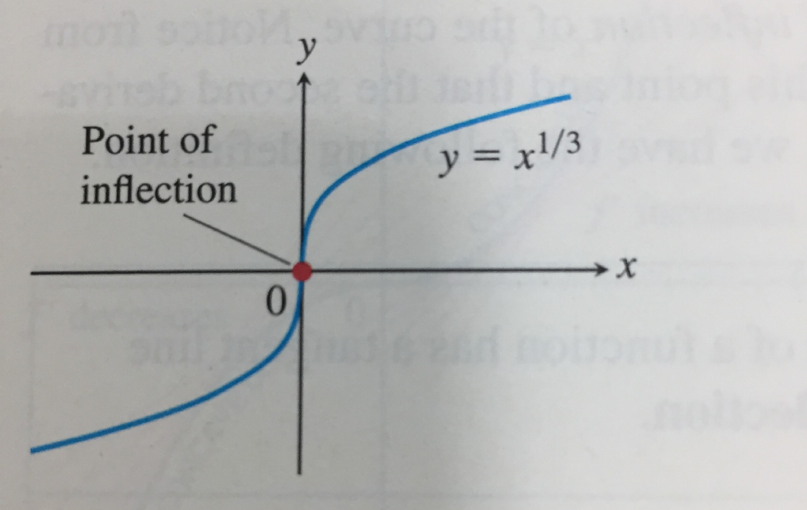
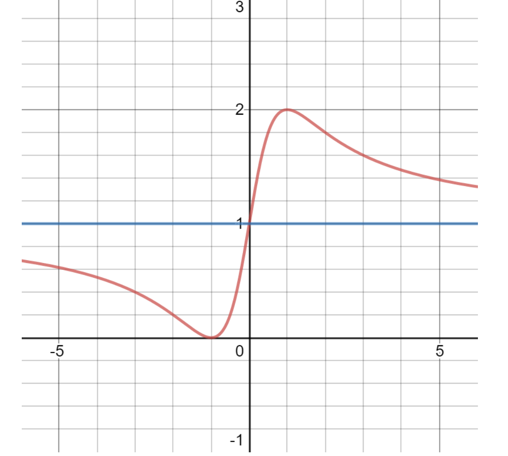

Definition (slides' convention). Inflection point: tangent exists and strict concavity changes across the point. Vertical tangents allowed. f′′=0 or undefined only gives candidates.
fx5/3x1/3x4x2/3concavity at 0down/upup/downup/updown/downtangenty=0x=0y=0cuspinflection?yesyesnono

Lecture 13, p.10.
Ex.1.2.46.f=(x+1)2/(1+x2)=1+2x/(1+x2); domain R.
f′=(1+x2)22(1−x2),f′′=(1+x2)34x(x2−3).
f′ signs −,+,− across −1,1: global min f(−1)=0, max f(1)=2. Direct check: f≥0, 2−f=(x−1)2/(1+x2)≥0.
f′′ signs −,+,−,+ across −3,0,3. Inflections:
(−3,1−3/2),(0,1),(3,1+3/2).
f→1− at −∞, 1+ at +∞; crosses the asymptote at 0.

Lecture 13, p.25.
Sketch order: domain, derivatives, critical points/signs, concavity, asymptotes, key values. Here f(−x)=2−f(x): point symmetry about (0,1).
Three exercises
Jordan. Strict concavity of sin on [0,π/2] gives
sinx>2x/π(0<x<π/2)
by comparison with the endpoint chord.
Convex maximum. Strict convexity on [a,b] gives, for a<x<b,
f(x)<αf(a)+(1−α)f(b)≤max{f(a),f(b)}. Maximum only at endpoints (possibly both).
Legendre roots.Pn=(2nn!)−1Dn[(x2−1)n]. Put Q=(x2−1)n.
Q(k)(±1)=0(0≤k<n).
Rolle gives one interior root of Q′. If Q(k) has k interior roots, its endpoint zeros give k+1 gaps, hence k+1 interior roots of Q(k+1). Induct up to n. Since degQ(n)=n, all n roots are distinct and in (−1,1).
For r=2, xn+1−r=(xn−r)2/(2xn). After the first step, xn≥r and decreases; the positive limit solves ℓ=(ℓ+2/ℓ)/2, so equals r. Error is squared near the root.
Failure examples: ex gives xn+1=xn−1 (no root). ∣x∣ gives xn+1=−xn for xn=0 (oscillation, despite having a root).
Tutorial 3
IVT / MVT
Q7.F=cosx−x: F(0)>0>F(1) gives existence in (0,1) by IVT. F′=−sinx−1<0 there; two roots would contradict MVT. Unique.
Q8. Continuous, nonzero f on [a,b]:
(a) Opposite signs would give a zero by IVT, so the sign is fixed.
(b) EVT: m=min∣f∣=∣f(c)∣>0, hence ∣1/f∣≤1/m.
(c) Open interval fails: f(x)=x on (0,1).
Q9. MVT: sinx−siny=cosc(x−y), so
∣sinx−siny∣≤∣x−y∣.
Uniform continuity: choose δ=ε, independent of x,y. More generally, ∣f′∣≤M on an interval gives ∣f(x)−f(y)∣≤M∣x−y∣ (Lipschitz).
Continuity and direct estimates
Q1.g=x+b for x<0, g=cosx for x≥0. Continuity at 0: b=1. Then left/right derivatives 1,0, so no b makes it differentiable.
Q3.F=φ on Q, ψ otherwise; φ,ψ continuous.
F continuous at a⟺φ(a)=ψ(a).
Necessity: rational/irrational sequences approaching a force both values to equal F(a). Sufficiency: if common value C, choose a common radius making both pieces within ε of C. For sinx,−sinx, continuity points a=kπ.
Q10.(x3−27)/(x2−9)=(x2+3x+9)/(x+3) off ±3. Limit at 3 is 9/2, matching the assignment. At −3, denominator →0, numerator →9. Continuity set R∖{−3}.
Fix x, let N→∞: ∣f(x)∣≤εx/2<εx. Thus f(x)/x→0. Need the first hypothesis to remove the last term (nonzero constants would fail).
Q13. For 0≤x<1, f(x)=f(x2n)→f(0) by continuity at 0. At 1, no restriction: f=0 on [0,1), f(1)=1 is a counterexample. Continuity at 1 forces f(1)=f(0).
Q14.g(x)=f(x2):
x→0limg(x)=L⟺t→0+limf(t)=L.
Right to left: from radius η for f, take δ=η. Left to right: from radius δ for g, take 0<t<δ2, x=t.
Continuity of g need not give continuity of f: f=0 for t≥0, 1 for t<0 makes g≡0.
Q15. Additivity gives f(0)=0 and f(a+h)−f(a)=f(h). Continuity at 0 transports the same ε-δ estimate to every a. In fact the radius is independent of a.
Lecture 14
Antiderivatives and the constant
Definition 1.2.13.F is an antiderivative of f on an interval I if F′=f throughout I. Always specify the interval.
Theorem 1.2.14. If F is one antiderivative on I, all others are F+C.
Proof: (G−F)′=0 on the interval; MVT makes G−F constant. On separate components the constants are independent. E.g.
∫xdx={x2/2+C−,x2/2+C+,−2<x<−1,1<x<2.
Definition 1.2.15.∫f(x)dx is the family {F+C:C∈R} on the chosen interval, usually written F(x)+C. Not a single function until C is fixed.
Basic formulas (k=0; work on intervals where the expressions are defined):
Also ∫kx+akdx=k+1k(x+ak)(k+1)/k+C on its real intervals, and ∫(x+bk)−kdx=(x+bk)1−k/(1−k)+C for k≥2. Check by differentiating.
Joining the pieces
Ex.1.2.51. A compact answer:
∫∣x−a∣dx=21(x−a)∣x−a∣+C(x∈R).
At a, the quotient is ∣h∣/2→0. Splitting into two formulas does not give two free constants if the antiderivative is required on all of R.
Ex.1.2.52(a). For f(x)=min{1,∣x∣},
F(x)=C+⎩⎨⎧x+1/2,x∣x∣/2,x−1/2,x≤−1,−1≤x≤1,x≥1.
Values match at ±1; derivative there is 1. At 0, derivative 0. Hence F′=f on R.
Ex.1.2.52(b,c): a jump. For either step function 1[0,∞) or 1(0,∞), no antiderivative exists on an open interval about 0: continuity of a proposed primitive joins a constant on the left to x+C on the right, giving one-sided slopes 0,1.
On R∖{0}, however, the primitives are C− for x<0 and x+C+ for x>0, with independent constants. Removing the joining point changes the problem.
Ex.1.2.53. For k∈Z and kπ≤x≤(k+1)π,
∫∣sinx∣dx=C+2k+1−(−1)kcosx.
Both adjacent formulas give C+2k at x=kπ; both derivatives there are 0. Thus this is one primitive on R. Its value increases by 2 each half-period; the primitive is not periodic.
For the second line, x2+2x+x=2x/(x2+2x−x)→−1. Horizontal y=1 on the right; oblique y=−2x−1 on the left. Endpoint values finite, so no vertical asymptote. Use x2=∣x∣.
Q3(b).g=x2+1/x: limits 1,−1 at +∞,−∞; limits +∞,−∞ at 0+,0−. Horizontal lines y=1,−1, vertical x=0; no oblique lines.
Q3(c).
h=(x−1)(x−2)(x−1)(x2+1)=x+2+x−25(x=1,2).
Vertical x=2, oblique y=x+2 at both infinities. x=1 is a removable hole (limit −2), not a vertical asymptote. No horizontal line.
Q4. As in Tutorial 3, Q8: IVT fixes the sign; EVT gives m=min∣f∣>0, hence ∣1/f∣≤1/m. On (0,1), f(x)=x shows the open-interval conclusion fails.
Q5-Q8: derivatives and extrema
Q5.F=ax+b for x<0, F=cosx for x≥0.
(a) Continuity: b=1, any a.
(b) One-sided derivatives a,0; differentiable iff (a,b)=(0,1), then F′(0)=0.
(c) For these values, F′=0 on the left, −sinx on the right; continuous at 0. But the one-sided difference quotients of F′ tend to 0,−1, so F′′(0) does not exist.
Interior critical points 0,3/4,1. Signs of f′: + up to 3/4 (except zero at 0), then − up to 1, then +. Local max at 3/4, local min at 1; 0 is neither. Absolute min −2 at −1, max 8 at 2.
Q9-Q11: what derivative bounds force
Q9(a). Differentiable f on an open interval I:
∣f′∣≤M⟺∣f(x)−f(y)∣≤M∣x−y∣(x,y∈I).
Forward: MVT. Reverse: divide by ∣h∣, then let h→0.
Q9(b). If f(b)−f(a)=M(b−a), for a≤x≤b the Lipschitz bounds give
f(b)−M(b−x)≤f(x)≤f(a)+M(x−a).
The two bounds are equal. Thus f(x)=f(a)+M(x−a) throughout [a,b].
Q9(c). From ∣g(x)−g(y)∣≤C∣x−y∣2,
hg(x+h)−g(x)≤C∣h∣→0.
Hence g′=0 and g is constant by MVT. With exponent 1, g(x)=x is a counterexample.
Q10. Zeros xn=c, xn→c; f differentiable at c.
(a) Continuity gives f(c)=0; along xn, [f(xn)−f(c)]/(xn−c)=0, so f′(c)=0.
(b) If f is differentiable near c and f′′(c) exists, Rolle between xn,c gives zn=c with f′(zn)=0 and zn→c. Therefore f′′(c)=lim[f′(zn)−f′(c)]/(zn−c)=0.
Q11 (Darboux property). Given f′(a)<λ<f′(b), set H=f−λx. Then H′(a)<0<H′(b), so neither endpoint minimizes H on [a,b]. EVT + Fermat gives an interior minimum c with H′(c)=0, i.e. f′(c)=λ.
No continuity of f′ used. A derivative may oscillate, but cannot have a jump.
Supplementary exercises
S1: interpolation error.f∈C[a,b], twice differentiable inside, ∣f′′∣≤M. Let L be the chord interpolant and set
E=f−L,q(x)=2M(x−a)(b−x).
Both E and q vanish at the endpoints. Since
(E−q)′′=f′′+M≥0,(E+q)′′=f′′−M≤0,
the chord inequalities give E−q≤0 and E+q≥0. Thus
∣f(x)−L(x)∣≤2M(x−a)(b−x)≤8M(b−a)2.
Smallest constant K=1/8: equality at the midpoint for f(x)=2M(x−a)(x−b), whose chord is zero.
S2: a primitive vs. an integral.
gλ(x)={2xsin(1/x)−cos(1/x),λ,x=0,x=0.
(a) Put F(x)=x2sin(1/x) off 0, F(0)=0. We know F′(0)=0; F′=g0 everywhere. If G′=gλ, then off 0, G=F+C±. Continuity at 0 forces one common constant, hence G′(0)=0. Therefore
λ=0 only;all primitives: F+C.
(b) All λ are Riemann integrable on [−1,1]. Prove it for arbitrary tagged sums, using MVT rather than an integration formula.
Set J=F(1)−F(−1)=2sin1 and B=3+∣λ∣, so ∣gλ∣≤B and ∣F′∣≤3 on [−1,1]. Given ε>0, choose